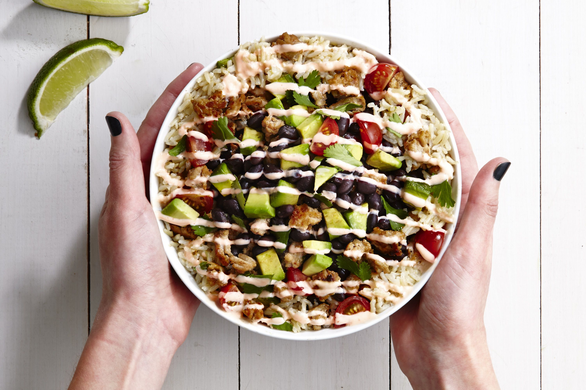
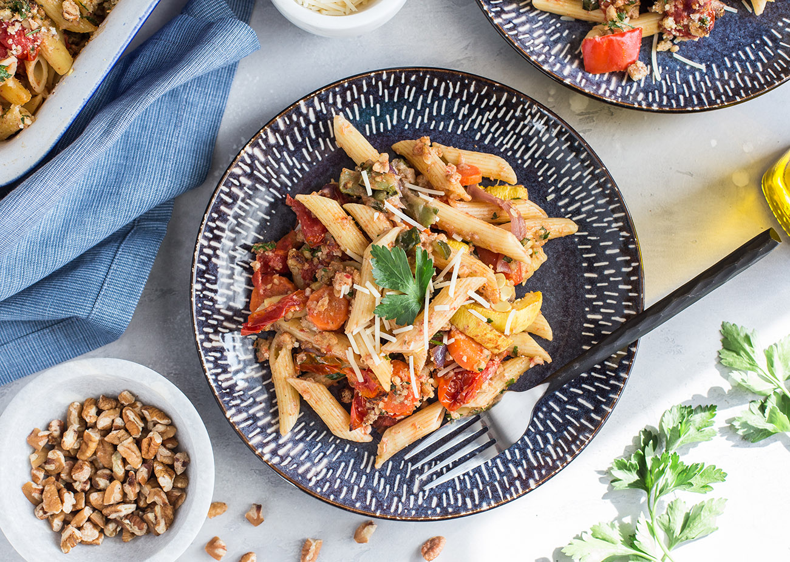
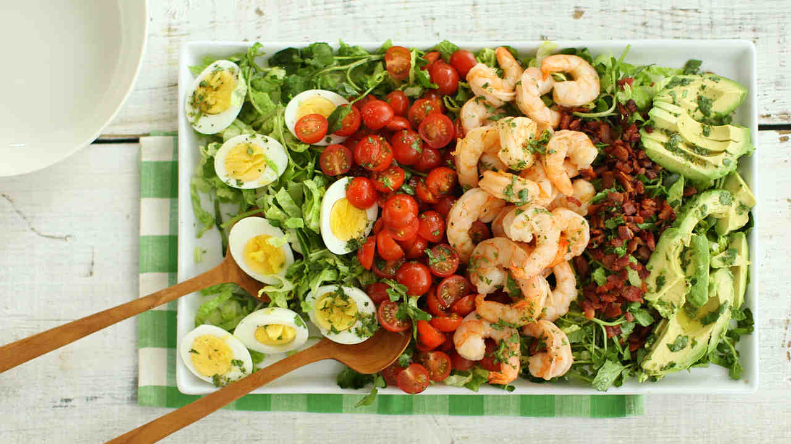

Healthy Lunch Ideas
Burrito Bowl
Cheaper than Chipotle, but takes about an hour to make.

Ingredients
- 2 cups brown rice
- 1 tbsp lemon juice
- 1 can black or pinto beans
- 1 green bell pepper
- 3 cups chopped Romaine lettuce
- 2 Roma tomatoes, diced
- 1 avocado, halved, seeded, peeled and diced
click here for more details
Grilled PB and J Sandwich
An American classic sandwich but grilled.

Ingredients
- 2 slices of bread
- 2 tablespoons of peanut butter
- 1 tablespoon of grape jelly
- 1 tablespoon of butter, softened
click here for more details
Pasta Primavera with Pecan Parmesan Topping

Ingredients
- 1 pint cherry tomatoes
- 2 tablespoons olive oil, divided
- 1/2 teaspoon salt, divided, or to taste
- Freshly ground pepper, to taste
- 1/2 cup grated Parmigiano Reggiano
- 1/2 cup chopped pecans
- 3 tablespoons chopped fresh parsley
- 3 garlic cloves divided
- 7 cups assorted vegetables
click here for more details
Shrimp Cobb Salad

Ingredients
- Organic Baby Romaine Leaves
- Green Cucumbers
- 5 cooked peeled shrimp
- Freshly ground pepper
- 1 hard-boiled egg, sliced
- cheese
click here for more details